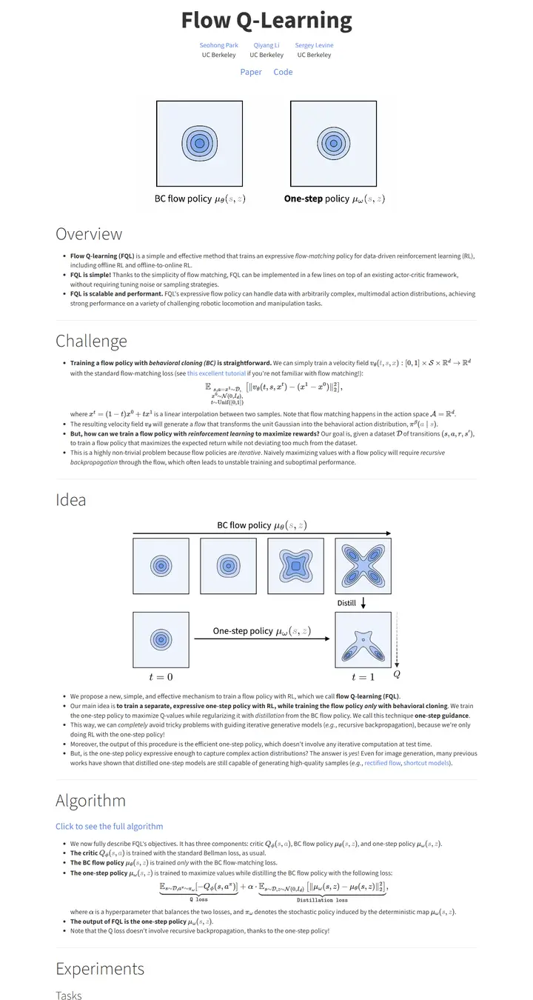
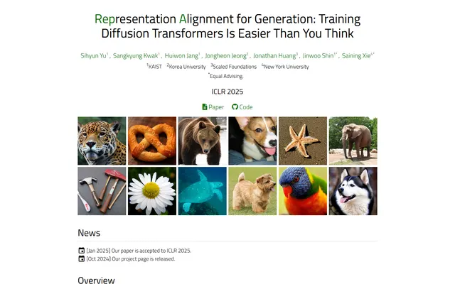
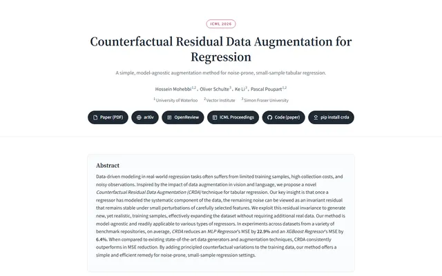
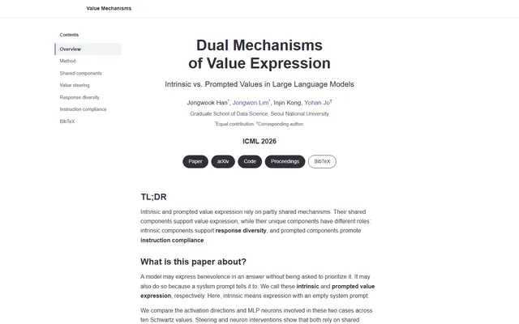
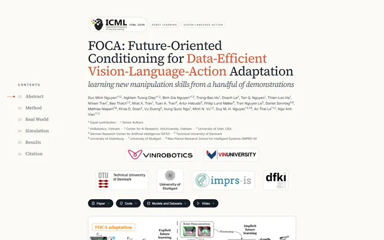

Flow Q-Learning
一份干净的讲义，标题轻声细语，图表负责说话。

已对照实际渲染的页面核对。
入选理由
克制的学术极简风。厚重的粗体标题，配细线的轻盈大号节标题，舒适的版心，以及承载叙事的干净蓝色等高线图。没有模板装饰，全靠排版。
下面的说明和 DESIGN.md 正文是英文。为了让编程 agent 读同一个版本，这部分没有翻译。
概述
配色
字体
Source Sans 3
Flow Q-Learning
Abstract · Method · Results · BibTeX — 0123456789
Source Code Pro
Flow Q-Learning
Abstract · Method · Results · BibTeX — 0123456789
MathJax TeX
Flow Q-Learning
Abstract · Method · Results · BibTeX — 0123456789
间距与形状
页面模块
使用建议
相似风格

OGBench: Benchmarking Offline Goal-Conditioned RL
一本整洁的实验笔记，一个矢车菊蓝的音节，一格格小小的世界，然后是细线下的朴素文字。

Representation Alignment for Generation: Training Diffusion Transformers Is Easier Than You Think
一张轻盈的 Titillium 页面，缩写以森林绿从标题里长出来。

Counterfactual Residual Data Augmentation for Regression
一本保管得很好的实验笔记，衬线标题、横线纸页，封面贴着覆盆子色标签，页边是青绿色批注。

Dual Mechanisms of Value Expression: Intrinsic vs. Prompted Values in Large Language Models
一份排得很好的技术备忘录，一栏窄窄的炭灰色正文、一条安静的目录栏，链接只用一缕紫罗兰色。

FOCA: Future-Oriented Conditioning for Data-Efficient Vision-Language-Action Adaptation
一本印在暖色纸上的季刊，只用一支朱红色的笔，页边索引随你一路往下。
InfoFlow KV: Information-Flow-Aware KV Recomputation for Long Context
深夜的任务控制台，青色信号线汇聚到一个发光节点，琥珀色火花在黑暗中飘散。